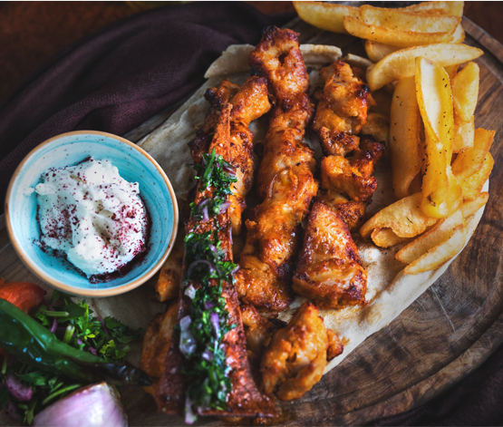

Meat is animal flesh that is eaten as food. Humans have hunted and killed animals for meat since prehistoric times.
The advent of civilization allowed the domestication of animals such as chickens, sheep, rabbits, pigs and cattle.
This eventually led to their use in meat production on an industrial scale with the aid of slaughterhouses.
Vegetarianism is the practice of abstaining from the consumption of meat (red meat, poultry, seafood, and the flesh of any other animal),
and may also include abstention from by-products of animal slaughter.
Vegetarianism may be adopted for various reasons. Many people object to eating meat out of respect for sentient life.
Such ethical motivations have been codified under various religious beliefs, as well as animal rights advocacy.
Dessert is a course that concludes a meal. The course usually consists of sweet foods, such as confections,
and possibly a beverage such as dessert wine or liqueur; however, in the United States it may include coffee,
cheeses, nuts, or other savory items regarded as a separate course elsewhere. In some parts of the world, such as much of
central and western Africa, and most parts of China, there is no tradition of a dessert course to conclude a meal.
Sushi is a Japanese dish of prepared vinegared rice, usually with some sugar and salt, accompanying a variety of ingredients
, such as seafood, vegetables, and occasionally tropical fruits. Styles of sushi and its presentation vary widely, but the one
key ingredient is "sushi rice", also referred to as shari, or sumeshi.
Sushi is traditionally made with medium-grain white rice, though it can be prepared with brown rice or short-grain rice.